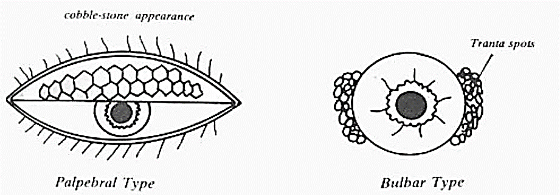

Conjunctiva · Allergic conjunctivitis
VKC: symptoms and conjunctival manifestations
Symptoms
- Itching, lacrimation, photophobia, Red eye.
- Ropy (thready) discharge (rich in eosinophils).
Signs — A. Conjunctival manifestations: 3 clinical types occur
- The palpebral type 70%: the upper palpebral conjunctiva shows characteristic papillae that are large, dark red (bluish white), flat topped, multiple and arranged in cobble stone pattern. The fornix is always free. They are associated with hyperemia and chemosis.
- The bulbar type (or limbal type) 10%: Shows limbal gelatinous masses both medially and laterally and later on, all around the cornea. Within the limbal lesion, white spots called "Tranta spots" appear, formed of concretion (calcium deposits) of eosinophils and necrotic epithelium.
- The mixed type 20%: i.e. the case shows both palpebral and bulbar manifestations.
